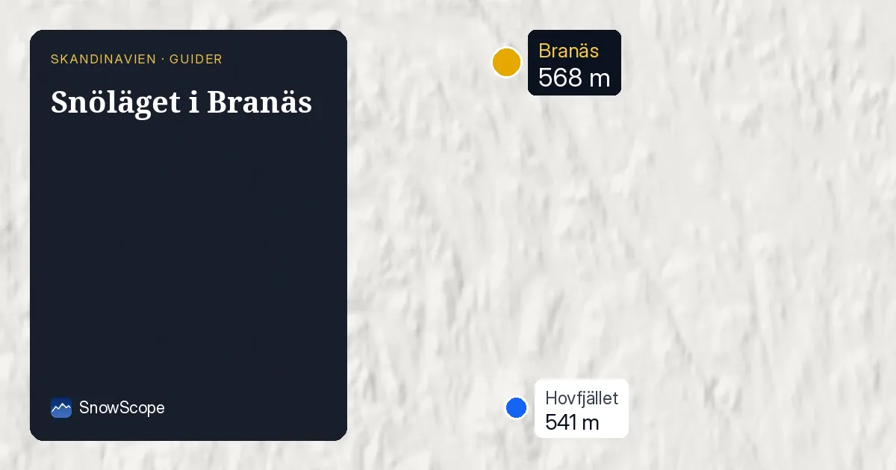

Snöläget i Branäs: 27 cm vid stationen på höjden, inget nere vid älven (14 november 2026)
Norra Värmland visar den här veckan bättre än något annat ställe vad höjden betyder. På morgonen den 13 november mätte väderstationen i Kindsjön, 13 km från Branäs på 425 m, 27 cm snö. Letafors, på 338 m, hade 17 cm. Östmark, nere i dalen på 100 m, hade ingen alls. Branäs sträcker sig från 150 m vid Klarälven till 568 m på toppen och täcker alltså precis det spannet.
Se snöprognosen för Branäs live i SnowScope-appenSnödjup, pudervarningar och 3D-kartan, gratis.

Vitt på toppen, grönt nertill
Kindsjön hade 1 cm den 10 november och sedan 27 cm den 13:e; Letafors gick från 11 cm till 17 cm på ett dygn. Båda stationerna står i skogen uppe på höjderna, ungefär lika högt som Branäs övre halva. Byn och de nedre liftarna ligger mycket lägre, närmare Östmarks barmark.
Vi uppskattar att det har kommit ungefär 14 cm nysnö på toppen och 4 cm i dalen de senaste sju dagarna, samma bild i våra egna siffror.

Mildare dagar framåt
Vår prognos ger nästan ingen snö i dalen de kommande sju dagarna och ungefär 3 cm på toppen. De andra prognoserna är överens om att det blir mildare: ungefär 90 % av nederbörden i dalen kommer som regn, ungefär hälften på toppen, och snögränsen stiger till runt 590 m, strax över toppen. Nysnön kommer att krympa.
Vad 46 vintrar säger
Den 14 november är vårt normala snödjup 5 cm på toppen och 1 cm i dalen. Dagens topp ligger långt över det. Den 15 december är de normala siffrorna 26 cm på toppen och 10 cm i dalen, och ungefär en vinter av sex har inte någon natursnö i dalen ens då.
Historiken visar också färre snödagar i dalen, från 132 under de första 15 vintrarna till 95 under de senaste 15. Precis som de andra lågt belägna anläggningarna i mellersta Sverige är Branäs beroende av snötillverkning för att kunna öppna i tid.
Öppning
Branäs officiella premiärhelg är 11 till 13 december, och säsongen slutar den 4 april. Den 13 november gick inga liftar; en kort längdslinga var öppen.
Tips för skidåkare
- Vill du se riktig snö i helgen, kör upp på skogsvägarna runt Kindsjön i stället för att stanna nere vid älven.
- Blöt, tung snö på grenarna efter en sådan natt gör skogsvägarna långsamma; ge dig gott om tid.
- Kolla Branäs sida om backar och väder innan du planerar en resa före säsongsstarten.
Fler kartor (externa webbplatser)
Referenser och källor
- SMHI, öppna data: dagligt snödjup vid svenska väderstationer www.smhi.se/data/meteorologi/ladda-ner-meteorologiska-observationer
- Branäs, officiell sida: öppettider och liftstatus, läst 2026-11-13 www.branas.se/oppettider/
- Branäs, backar och väder (officiell) www.branas.se/skidakning-i-branas/backar-och-vader/
Om siffrorna
Uppmätt snö: morgonavläsningar den 13 november 2026 vid de officiella väderstationerna i Sverige (SMHI öppna data), Finland (FMI öppna data, CC BY 4.0) och Norge (MET Norways stationsrapporter, CC BY 4.0, publicerade av Ogimet). Norges nationella snökarta seNorge (NVE och MET Norway, NLOD) ger uppskattningarna på ett rutnät om 1 km för backarna. Våra siffror: SnowScopes prognos för de kommande sju dagarna på tre höjder i skidområdet, jämförd med oberoende prognoser (ECMWF, ICON, GFS, GEM) för 14 till 20 november; snöhistorik för 46 tidigare vintrar (1980-81 till 2025-26), en modell av det förflutna korrigerad för höjd. Öppningsdatum: anläggningarnas egna sidor, lästa den 13 november 2026. Pistlängd och antal liftar: kartläggning i OpenSkiMap.
Officiella lavinprognoser: Lavinprognoser (Naturvårdsverket)
Citera den här rapporten
För forskning, undervisning eller press: siffrorna och diagrammen får återanvändas fritt under CC BY 4.0 med den här källhänvisningen.
SnowScope (2026), Snöläget i Branäs: 27 cm vid stationen på höjden, inget nere vid älven (14 november 2026), https://snowscope.app/blog/sv/2026/11/branas-snow-conditions-14-november-2026.html, hämtad 2026-11-14
SnowScope (Atlas Labs). (2026, November 14). Snöläget i Branäs: 27 cm vid stationen på höjden, inget nere vid älven (14 november 2026). SnowScope snow reports. https://snowscope.app/blog/sv/2026/11/branas-snow-conditions-14-november-2026.html
BibTeX
@misc{snowscope2026branassnowconditions14no,
author = {{SnowScope (Atlas Labs)}},
title = {Snöläget i Branäs: 27 cm vid stationen på höjden, inget nere vid älven (14 november 2026)},
year = {2026},
month = nov,
howpublished = {\url{https://snowscope.app/blog/sv/2026/11/branas-snow-conditions-14-november-2026.html}},
note = {Published 2026-11-14 20:11 UTC; accessed 2026-11-14}
}· CC BY 4.0 · Metoder, data och verktyg →
Branäs: snö och temperatur efter höjd, i vinter jämfört med förra (verktyg) →
Följ Branäs
Gratis: ett meddelande när nysnö är på väg, och prognosen varje morgon.